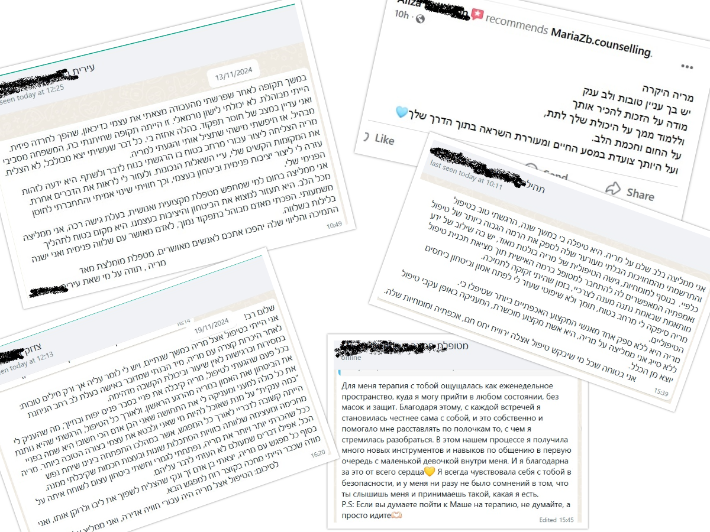

Здравствуйте, меня зовут Мария Зборовская, я сертифицированный психотерапевт с большим опытом работы в
сопровождении и эмоциональной поддержке людей, сталкивающихся с различными жизненными трудностями. Я верю в
силу открытого и принимающего диалога, а также в терапевтический процесс, который помогает человеку найти
связь с самим собой, освободиться от эмоционального груза и обрести новый смысл в жизни.
За время моей практики я работала со взрослыми, детьми и подростками, специализируясь на экзистенциальной
психотерапии. Этот подход уделяет особое внимание изучению смысла и сущности человеческого существования, поощряя
клиента исследовать свой внутренний мир, осознавать свои ценности и строить свой уникальный жизненный путь.
Я здесь, чтобы выслушать вас и сопровождать в личном процессе, где вы сможете задавать важные вопросы,
справляться с беспокойствами и находить инструменты для решения повседневных задач. Вместе мы создадим
безопасное и непредвзятое пространство, в котором вы сможете выражать себя честно и искренне.
Степень бакалавра психологии (Открытый университет Израиля).
Диплом о профессиональной подготовке: трёхлетняя программа «Экзистенциальная психотерапия» (Семинар кибуцим, Тель-Авив).
Специализация в экзистенциальной психотерапии.
Постоянное участие в семинарах и тренингах по вопросам эмоциональной устойчивости, работы с тревогой и
улучшения качества жизни.
Я верю, что каждый человек заслуживает пространства, где его услышат, поддержат и помогут раскрыть
потенциал.
Моя цель — создать именно такое место, где вы сможете осознать свои внутренние ресурсы, справиться с
жизненными вызовами и найти путь к гармонии и смыслу. Будь то личные, семейные или партнерские трудности, я
готова сопровождать вас на этом пути к новым возможностям и внутреннему росту.
Экзистенциальная психотерапия — это уникальное путешествие, в котором клиент и терапевт совместно исследуют глубокие смыслы жизни и ощущение существования в сложном мире. Этот подход подходит для тех, кто стремится разобраться с фундаментальными вопросами, освободиться от чувства застоя и найти новый путь к самопознанию и гармонии.
Экзистенциальная психотерапия основана на принципах самопознания и личной осознанности:
- Личная идентичность: Кто я? Кем я хочу быть? Исследование своей идентичности, ценностей, убеждений
и их влияния на повседневную жизнь.
- Свобода выбора: Осознание своей способности выбирать и принятие ответственности за свои решения и
действия.
- Смысл жизни: Поиск личного смысла на каждом этапе жизни, даже в периоды трудностей и кризисов.
- Смерть и одиночество: Принятие экзистенциальных страхов, осознание хрупкости жизни и создание
чувства принадлежности.
Экзистенциальная терапия предназначена для тех, кто стремится глубже понять себя, переосмыслить свою жизнь и обрести новый смысл. Если вы ощущаете внутренний застой, задаетесь вопросами о своей идентичности или сталкиваетесь с важными жизненными переменами, этот подход помогает найти безопасное пространство для самопознания и поиска гармонии.
***Безопасное и непредвзятое пространство: Сессии проходят в поддерживающей атмосфере, где вы можете
открыто выражать свои мысли и чувства.
***Глубокое исследование: Совместное изучение прошлого и настоящего, выявление эмоциональных привычек и
моделей поведения, а также поиск взаимосвязей между жизненными переживаниями.
***Развитие личных инструментов: Формирование навыков, которые помогут справляться с повседневными вызовами, улучшить отношения и укрепить самооценку.
***Перемены и осознание: Цель терапии — не только решение проблем, но и создание значимых изменений, которые приведут к более насыщенной и удовлетворённой жизни.
В современном мире, полном требований, ожиданий и постоянной спешки, так важно остановиться и уделить время самому себе.
Экзистенциальная психотерапия даёт возможность сделать эту остановку, взглянуть внутрь себя и посвятить время
собственному развитию — не через осуждение, а через принятие и стремление к росту.
Я приглашаю найти опору в своих силах, разобраться с трудностями, осознать свои внутренние потребности и шаг за шагом приблизиться к гармоничной и осмысленной жизни
